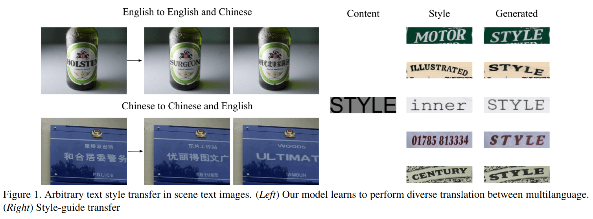
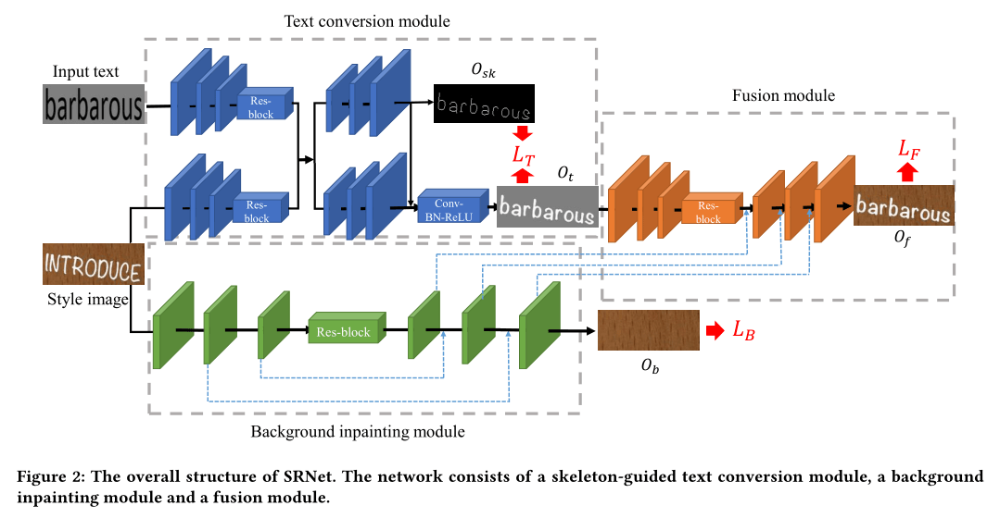
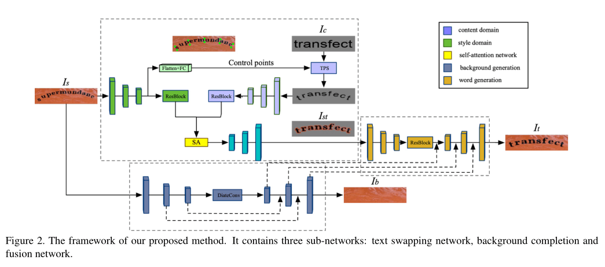
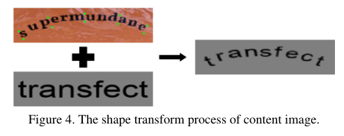
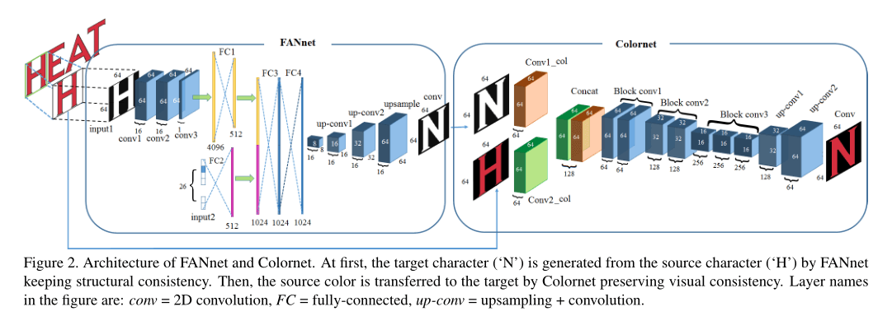
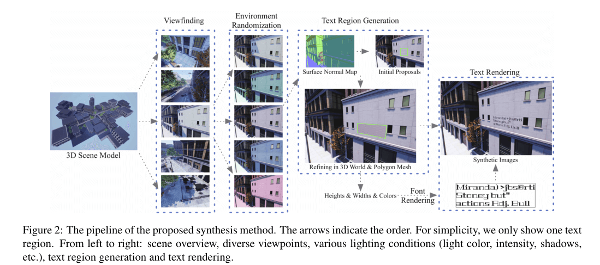
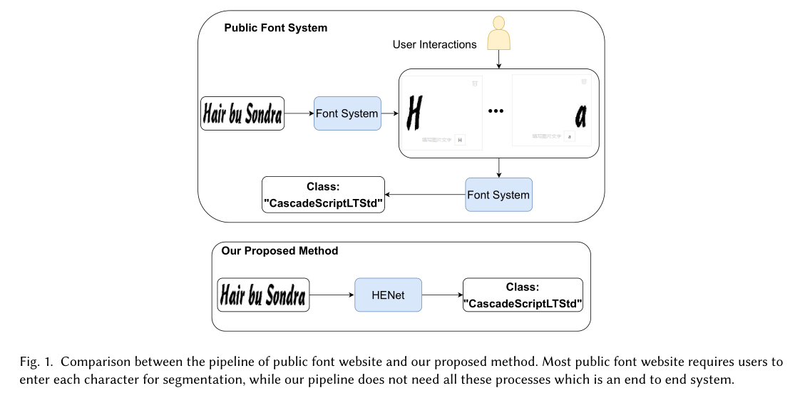
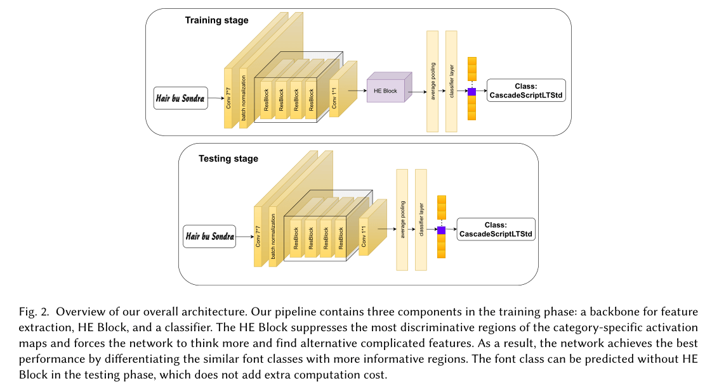

Plan-对论文的目前想法
主体

目前主要的想法还是场景文本编辑这一问题：在自然图像中编辑文本，保留背景和文本的风格。相关工作的论文：
Editing Text in the Wild
发表于《ACM International Conference on Multimedia (MM)》，2019，中国计算机学会推荐国际学术会议（计算机图形学与多媒体）A 类。
认为场景文本编辑面临两大挑战：文本样式迁移和背景纹理保留。

提出了一个场景文本的风格保留网络：SRNet，将这个复杂的任务分解为几个更简单、模块化、可联合训练的自网络：
在训练过程中，SRNet 将一对图像 $(I_s,I_t)$ 作为输入：
- $I_s$ 是原样式图像
- $I_t$ 是目标文本图像
输出 $((T_{sk},T_t),T_b,T_f)$：
- $T_{sk}$ 是目标文本骨架
- $T_t$ 是与 $I_s$ 具有相同文本样式的前景图像
- $T_b$ 是背景
- $T_f$ 最终目标文本图像
- Text conversion module 文本转换模块（TCM）
- 使用 FCN
- 接受输入 $(I_s,I_t)$ ，使用 3 个下采样卷积层和 4 个残差块进行
编码特征，然后将两个特征沿深度轴进行拼接 - 解码时，使用 3 个上采样转置卷积层和 1 个 1 Convolution-BatchNorm-LeakyReLU 输出 $O_t$
- 接受输入 $(I_s,I_t)$ ，使用 3 个下采样卷积层和 4 个残差块进行
- 引入了骨骼引导的学习机制，从原样式图像 $I_s$ 转移文本样式后，在 $I_t$ 中维护文本骨架，增加一个由 3 个上采样层和 1 个卷积层组成的骨架响应快，再加上一个 sigmoid 激活函数来预测单通道骨架图
- 使用 FCN
- Background inpainting module 背景修补模块（BIM）
- 按照“U-Net”的总体架构，以自下而上的特征融合方式，将原有的文字笔画像素擦除，填充适当的纹理，以 $I_s$ 为输入，输出背景图像 $O_b$
- 输入图像通过 3 个步长为 2 的下采样卷积层进行编码，紧跟 4 个残差块
- 解码器使用 3 个上采样卷积层生成原始大小的输出图像
- 加入对抗性学习
- Fusion module 融合模块
- 学习如何有效地融合前景信息和背景纹理信息，合成编辑后的文本图像
- 遵循编码器-解码器 FCN 框架，编码器由 3 个下采样卷积层和残差块组成
- 解码器由 Convolution-Batch-Norm-LeakyReLU 块生成最终编辑的图像
- 加入对抗性学习
- 引入 VGG-Loss，减少失真，使图像更真实，包含感知损失和风格损失
SwapText：Image Based Texts Transfer in Scenes
发表于《IEEE Conference on Computer Vision and Pattern Recognition，2020，中国计算机学会推荐国际学术会议（人工智能）A 类。

提出了一种新颖的文本交换网络 SwapText，可以替换场景文本图像中的文本，同时保留原始风格。给定场景文本图像 $I_s\in \mathbb R^{H\times W\times 3}$，目标为输出 $I_c\in\mathbb R^{H\times W\times 3}$ 在保留原始风格的同时，替换文本。包含三个自网络：
Text swapping network 文本交换网络
- 首先从 $I_s$ 中提取风格特征，从 $I_c$ 中提取内容特征，通过 self-attention network 将这个特征结合起来
- 使用 CSTN 根据风格图像 $I_s$ 的几何属性对内容图像 $I_c$ 进行变换
- 受文本检测和文本识别中文本形状定义的启发，用 $2K$ 基点 $P=\{p_1,p_2,…,p_{2K}\}$ 来表示
- 通过薄板样条（TPS）模块对内容图像进行变换

- 对样式图像和转换后的内容图像进行 3 个下采样卷积层和若干残差块的编码。为了充分结合风格 $F_c$ 和内容特征 $F_s$，我们将它们放入一个 Self-Attention network 中生成特征映射。在解码过程中，使用 3 个上采样反卷积层来生成前景图像 $F_{cs}$。
Background completion network 背景补全网络
- 重构图像 $I_s$ 的原始背景图像 $I_b$，GAN
Fusion network 融合网络
- 将 Text swapping network 和 Background completion network 的输出融合，生成最终图像 $I_t$
- 引入 VGG-loss
STEFANN: Scene Text Editor using Font Adaptive Neural Network
发表于《IEEE Conference on Computer Vision and Pattern Recognition，2020，中国计算机学会推荐国际学术会议（人工智能）A 类。

提出了一个字符级生成模型，限制问题的复杂性，限制在大写、不重叠字符的场景文本上，步骤：
预处理
Selection of the source character to be replaced 选择要替换的源字符
- 使用场景文本识别算法 EAST 初步标记文本区域，手动选择多边形的点来定义单词的文本区域 $\Omega$
Generation of the binary target character 生成二值化目标字符
- 使用 MSER 算法来检测区域 $\Omega$ 中出现的单个字符的二进制掩码输出 $I_M$
- 根据 $I$ 的二值化图像 $I_B$ 输出最终的二值化图像 $I_c$：$I_c(\mathbf{p})=\left\{\begin{matrix}I_M(\mathbf{p})\odot I_B{(\mathbf{p}}) & \mathrm{if}\ \mathbf{p}\in\Omega\\ 0 & otherwise\end{matrix}\right.$
FANnet
- 需要两个不同的输入：
- $64\times 64$ 的源字符图像，3 个卷积层-Flatten-FC1
- 长度为 $26$ 的目标字符的独热编码 $\mathbf v$，FC2
- 最后两个 FC 输出其他字母，应用 OSTU，得到二值目标图像
- 需要两个不同的输入：
Colornet
- Color transfer 颜色转移
- 基于 CNN
- 两种输入：
- 彩色元字符图像
- 二值化目标字符图像
- Character placement 字符放置
- 从 $I$ 中删除源字符，使用 $W(I_b,\psi)$ 对掩码图像进行重构，以便可以放置生成的目标字符
- Color transfer 颜色转移
想法
UnrealText：Synthesizing Realistic Scene Text Images from the Unreal World
[2003.10608] UnrealText: Synthesizing Realistic Scene Text Images from the Unreal World (arxiv.org)
国外同行举报CVPR 2020中国论文一稿多投，作者之一华科教授还是本届CVPR领域主席 - 知乎 (zhihu.com)

基于 UE4.22 和 UnrealCV 插件实现合成数据集 UnrealText。 在场景文本识别的 SOTA: EAST 上有效
- Viewfinder module 取景器模块
- Environment Randomization module 环境随机化模块
- Text Region Generation module 文本区域生成模块
- Text Rendering module 文本渲染模块
在场景文本编辑中引入合成数据集，中文的场景文本数据集较少，尝试合成数据集。
HENet：Forcing a Network to Think More for Font Recognition
发表在 AISS 2021: Sanya, China
目前的字体识别网站需要用户交互，而我们提出的网络架构 HENet 是段端到端的。

Huang et al. [4] propose a font recognizer for Chinese characters and Chinese text blocks, which is made up of a modified inception module and convolutions.

三个组件：
特征提取主干
- 一阵卷
HE 块
- 提出了一个名为 HE Block 的可插拔模块，以提高 HENet 的字体识别精度。HE块抑制响应值最突出的特征，并迫使网络寻找更复杂的特征，以对类似字体做出正确的预测。
字体分类器
- 将字体识别视作一个分类问题。
提到了引入 transformer，以获得全局和局部的笔画信息。
在场景文本编辑中作字体识别，直接从字体文件中找到该字体的其他字符，作为字体生成的备用方案。
其他：Font Recognition with Deep Learning | by Jehad Mohamed | MLearning.ai | Medium 这个较老，2015 年的，就是卷积神经网络一阵卷。
Text Recognition in the Wild：A Survey
见：Paper-Text Recognition in the Wild-A Survey-Zi-Zi’s Journey (gz-metal-cell.github.io)